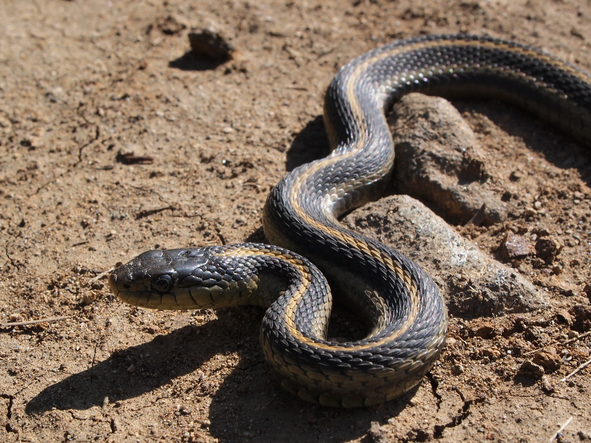

Projects
Personal Projects

Computational Modeling and Data Analytics

Snake Species Classification
Use the ResNet-18 convolutional neural network to classify images of snakes by species
Exploring Data Imputation Methods
Explored data imputation methods for categorical and quantitative data to be used in the project sponsor's predictive risk score models. Summarized results in a report and presentation.
English 3844

Changing [Your Understanding of] the Game
How technology enables any fan to emulate a sports statistician

Highs and Lows of Pandemic Learning
Current Virginia Tech students talk pros and cons of learning during the COVID-19 pandemic

Why Virginia Tech?
From food to fun, aesthetics to athletics, discover why so many call Virginia Tech home (and you should, too)